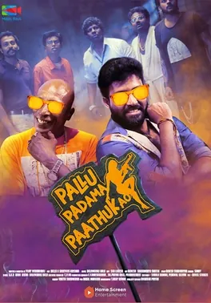

The genetics
The zombies are the product of a scientist's attempt to defeat death. Rohit Sharma, Sathya's father, ran 'Project Cthulhu', research into making humans live after death, and developed a virus that creates zombies; he was bitten himself and went on to reanimate Hitler's body, whose zombie army becomes the film's final threat. His daughter Sathya continues the research: she has an antidote, which she uses on herself after being bitten, but she also drugs and ties up a group of strangers to use in her experiments, before turning romantic lead. The genetic element is thin: a lab-made reanimation virus serves as the premise for a broad comedy, and the source gives no detail about the science or about how the film judges its scientists. Critics panned the film for its weak plot and crude jokes. Only one source, the English Wikipedia plot summary, was available.
How genetics is portrayed
- Overall portrayal of genetics
- negative Research into life after death unleashes zombies and a reanimated Hitler, and the researcher-heroine uses people as test subjects; the tone is broad comedy and the thin source makes this tentative.
- Outcome of the genetic intervention
- negative The virus creates the zombies that attack the group and kill Parthasarathy, and the reanimated Hitler leads a zombie army that kidnaps Sathya; the antidote saves only her.
- Rohit Sharma
- ambivalent Aim: curiosity (neutral). His Project Cthulhu sought to make humans live after death and produced the zombie virus; after his daughter saves him he reanimates Hitler, whose zombie army kidnaps her. The single source tells this only in his daughter's flashback and gives no further moral colouring.
- Sathya
- hero Aim: curiosity (neutral). She continues her father's zombie research, drugging and tying up strangers to study them, and has an antidote she uses on herself; she rescues the group and is the romantic lead whom the heroes save.
The story
In this Tamil zombie comedy, whose title means 'Don't let the teeth touch', the dubbing artist Gopi is forced by the henchmen of a blind rich man to guide him into the Kunju Thanni forest, where Gopi meets a zombie. Years later, a group of strangers gathers at a cliff in the same forest to commit suicide, each explaining why, until the jail escapee Mahesh invites them to drink instead. One of them stumbles into a laboratory full of zombies; the group is rescued by a young woman, Sathya, with whom Mahesh falls in love, but she drugs them and ties them up for her zombie research. She saves them from an attack, but is bitten, and Parthasarathy dies protecting her. At home Sathya injects herself with an antidote and explains that her father, Rohit Sharma, created the zombie virus in 'Project Cthulhu', research into making humans live after death, and that he turned Hitler's body into a zombie. Hitler's zombies kidnap Sathya, believing her to be his wife, and Mahesh and his friends rescue her.